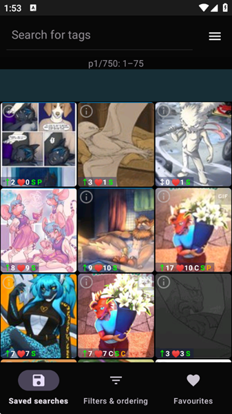
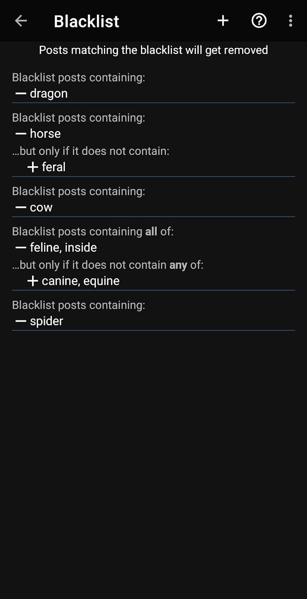

e621客户端避坑指南：那些年我踩过的五个让网格空白的坑
The Wolf's Stash 看着简单，其实有几个容易踩的暗坑。从视频放不出来、黑名单写反、到账号黑名单没同步，逐个拆解症状、原因和解法。
第一次从 e621官网 拿到 The Wolf's Stash 客户端的时候，我以为这就是个图站浏览壳子，点开就能用——直到某天搜了一堆东西出来全是空白网格，或者好不容易看到视频却只有声音没画面，才意识到这玩意儿比看起来复杂得多。以下是我踩过的五个真坑，每个都有实打实的症状和解法。
坑一：视频只有声音没画面，或者直接黑屏
症状：点开一个 webm 视频，播放界面正常弹出，进度条能拖，但画面是黑的或者压根没渲染出来；有的 mp4 干脆直接报"格式不支持"。
原因：这个坑分三种情况，我前两次都错判成了网络问题。第一种是分辨率超出设备硬解上限——图站里有不少社区小伙伴传的 4K webm，手机的硬件解码器扛不住，客户端内置播放器就直接黑屏。第二种是格式标注 bug，曾有版本把 mp4 错标成 jpg，结果桌面网页端能正常播，客户端却报"图片格式不支持"，纯标注错误。第三种最诡异——动画 webp 正常视图放不出来，但点帖子信息的 i 图标反而能放，属于已知兼容问题，社区反馈持续了好几个版本。

解法：先别急着卸载重安。用系统自带的播放器或 MX Player 试试同一个文件——如果能放，基本就是硬解上限问题，下次检索的时候加个 filetype:webm 以外的筛选，比如用尺寸元标签排除超大文件。格式标注 bug 好办，更新客户端就行，这类修复会进版本更新记录。动画 webp 那个临时走 i 图标路径，或者存到本地用相册看，等官方修。这类已知问题和检索技巧在 e621文档 里也有更详细的排查思路。
坑二：黑名单写反了，越挡越多
症状：我明明写了一条规则想屏蔽 dragon 标签的内容，结果刷新之后带 dragon 的帖子反而更多了——整个网格被红色占满，差点以为客户端炸了。
原因：黑名单规则的加减号方向我搞反了。减号是"挡"，加号是"留"，我写成了 + dragon，意思变成了"只要带 dragon 就放行"——等于反过来筛了。这套规则还有带例外的复合写法：— horse … + feral 是屏蔽 horse，但带 feral 的放行；多标签全含用逗号分隔的减号，例外多标签用加号（任一即放行）。记不住方向的时候很容易写反。

解法：改规则前先想清楚"挡"还是"留"。如果改完还是觉得不对劲，先确认标签拼写有没有写错（dragon 拼成 drag0n 就等于没写），再确认规则方向，最后检查是不是站点侧的账号黑名单没同步过来——客户端支持和站点侧黑名单同步，两边是两层过滤，漏了一层就挡不住。
坑三：注册了客户端账号，结果根本登录不上
症状：在客户端里找了半天注册按钮，找不到；然后去站点注册了一个账号，回客户端输入用户名密码又报 API 密钥错误。
原因：我搞混了两套东西。The Wolf's Stash 没有自己的账号体系，客户端不负责注册任何账号——账号是注册在站点侧的（网页端），客户端只负责"登录"这个站点账号。登录也不是直接输密码，需要先在站点的用户主页里生成 API 密钥，相当于密码的替身。另外，一个账号在 e621 和 e926 两边通用，这点倒是省了一份注册功夫。
解法：流程是这样的——浏览器打开站点 Sign up，填用户名邮箱密码收验证邮件，登录后进用户主页找 API 密钥入口，复制密钥回客户端填进去。客户端本身直接从 官方下载 就行，不需要额外注册账号。密码本身客户端不用，API 密钥丢了去站点重新生成就行。
坑四：搜出来一堆动图，老设备卡得像幻灯片
症状：在旧手机上搜了一轮，网格加载慢得要死，点进动图要么黑屏要么帧率掉到肉眼可见的卡顿。我以为是信号不好，换了 WiFi 还是一样。
原因：图站里动图 webp、视频 webm、mp4 都混在普通图片网格里，不加筛选的话会一股脑全出来。弱网或老设备上，动图的解码负担比普通 png 高得多，网格滚动直接卡成 PPT。这不是网络问题，是解码能力的瓶颈。
解法：检索时用 filetype: 精确筛选。只看静图就 filetype:png 或 filetype:jpg，想排除动图和视频就加 -filetype:webm -filetype:animated_webp。还可以配合尺寸元标签，用比较符号排除大文件——比如加上 <1000x1000 限制分辨率范围，或者用像素元标签只取中等尺寸的图。
坑五：收藏和关注全丢了，以为账号被盗
症状：换了一台手机登客户端，发现之前收藏的帖子、关注的标签全没了，第一反应是账号被人动过。
原因：站点侧的收藏和关注数据在账号里没问题，但客户端本地可能没正确同步过来——尤其是换设备或者重装过的情况下。另外，客户端支持本地黑名单与站点侧黑名单同步，但收藏关注的同步逻辑在旧版本里确实出过 bug。
解法：先确认用的是同一个 API 密钥登录的同一个账号（e621 和 e926 账号通用但密钥各自生成），然后在客户端设置里手动触发一次数据同步。如果还是没回来，去站点网页端看一眼收藏列表——那里还在的话说明账号没问题，等客户端同步就行。
防坑清单
- 视频放不出先别慌重安：先用系统播放器验一下，排除硬解上限问题，再查客户端版本和格式标注 bug
- 黑名单规则写完先刷新一遍看效果：加减号方向搞反 = 反着筛，标签拼写也得二次确认
- 记住客户端不负责注册：账号去站点网页侧注册，客户端只填 API 密钥
- 老设备检索先排除动图视频：
-filetype:webm -filetype:animated_webp一行检索式省很多事 - 换设备先手动同步数据：收藏关注在账号里丢不了，大概率是客户端没触发同步
说穿了，这软件本身就是个干净的浏览壳子，没那么多花里胡哨的功能，但正好因为简单，几个容易踩的点反而更隐蔽。把这几个坑摸透之后，日常用着其实相当省心。顺便提一句，我整理的这套资料和安装包说明同时放在了 GitHub、Gitee 和 GitCode 三个仓库，哪边国内访问更顺就用哪边。